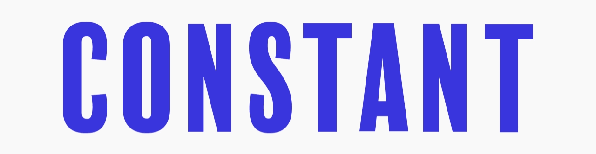
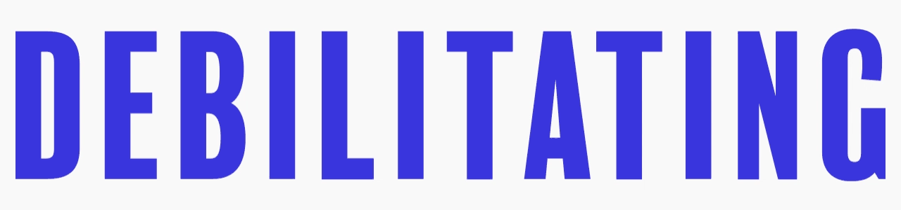
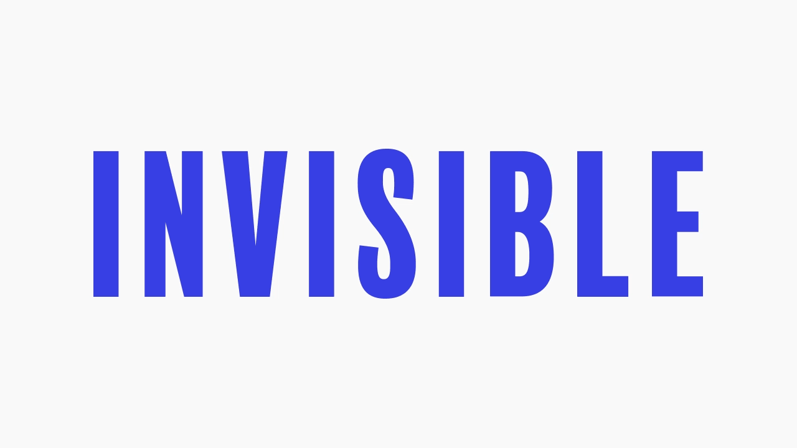

Do you want to
give
or
get
soup*?
Learn more
What words come to mind when you hear “mental illness”?
Scroll down to see what others said
What words come to mind when you hear “mental illness”?

What words come to mind when you hear “mental illness”?

What words come to mind when you hear “mental illness”?

“When I think ‘illness’ I think, ‘Hey, that's a bummer, you're sick. Let's get you some medicine and maybe some soup.’
But when you throw ‘mental’ in there suddenly the game changes and I don't know why...
People treat it like it's something other than illness, like it's scary or shameful or something you should hide.
I think that's dumb. I think I would like it if people offered more soup.”
Christine Bosch